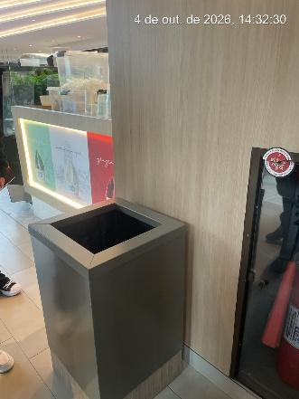
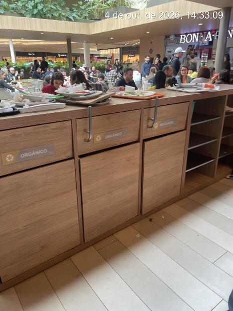
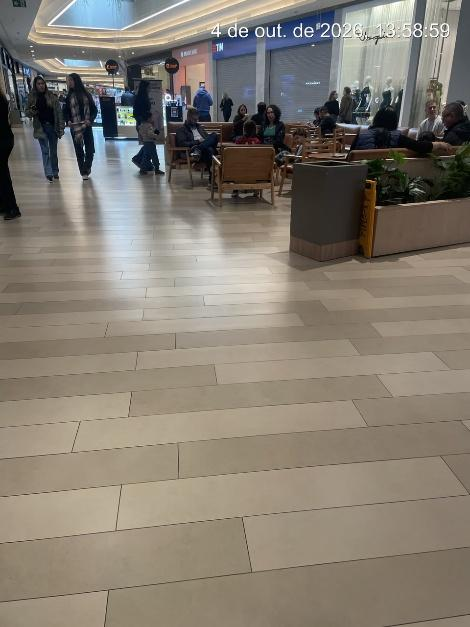
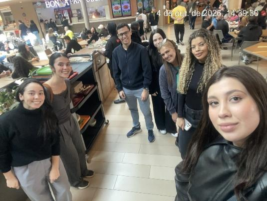

Áreas de circulação
Lixeiras gerais
Nos pontos observados, não havia identificação visível por tipo de resíduo nem compartimentos separados por material.
Entenda a diferença entre recicláveis, orgânicos e rejeitos e descubra como pequenas decisões no descarte ajudam a construir ambientes mais conscientes e sustentáveis.

Durante a visita ao Jockey Plaza Shopping, a equipe observou diferenças importantes entre os pontos de descarte das áreas de circulação e os coletores da praça de alimentação.

Nos pontos observados, não havia identificação visível por tipo de resíduo nem compartimentos separados por material.
Foram encontrados coletores de orgânicos e recicláveis, porém sem exemplos visíveis dos materiais aceitos em cada categoria.
A orientação limitada pode gerar dúvidas no momento do descarte. Por isso, a intervenção foi planejada para ampliar o acesso a informações simples e práticas sobre separação de resíduos.
A separação correta facilita o encaminhamento de materiais com potencial de reciclagem.
Identificar cada categoria ajuda a reduzir erros e a mistura desnecessária entre diferentes resíduos.
O conhecimento adquirido pode ser levado para casa, trabalho, faculdade e outros espaços do cotidiano.
Use estas categorias como referência educativa. Na prática, sempre observe a identificação e as orientações disponíveis no coletor do local.
Dica: sempre que possível, retire restos de alimentos e líquidos antes do descarte.
Dica: evite misturar embalagens e objetos não orgânicos com restos de comida.
Dica: quando houver dúvida, confira a sinalização do coletor e as orientações locais.
Uma pausa rápida antes do descarte já ajuda a tomar uma decisão melhor.
Observe o material. Ele é uma embalagem, resto de alimento ou rejeito?
Procure a identificação. Veja quais categorias existem naquele ponto de descarte.
Escolha o coletor adequado. Em caso de dúvida, siga as orientações disponíveis no local.
Responda algumas situações rápidas e veja como está seu conhecimento sobre separação de resíduos.
Pergunta 1
O cuidado com os resíduos está relacionado à qualidade dos espaços em que vivemos e circulamos. O descarte adequado contribui para ambientes mais limpos e organizados e faz parte de práticas de educação ambiental, bem-estar e responsabilidade coletiva.
Este site integra um projeto de extensão universitária desenvolvido a partir de uma observação de campo realizada no Jockey Plaza Shopping, em Curitiba.
Analisamos os pontos de descarte nas áreas de circulação e na praça de alimentação.
Definimos uma ação educativa simples, acessível e alinhada às fragilidades identificadas.
O conteúdo será divulgado por panfletos com QR Code e por este site educativo.


O projeto foi relacionado a três ODS diretamente conectados à educação ambiental, sustentabilidade urbana e consumo responsável.
Ampliação do acesso a informações educativas sobre separação e descarte.
Incentivo a práticas mais responsáveis em espaços de grande circulação.
Estímulo à separação correta, ao descarte consciente e ao aproveitamento de recicláveis.
Projeto interdisciplinar desenvolvido por estudantes de Biomedicina, Educação Física e Fonoaudiologia.
Integrante da equipe
Integrante da equipe
Integrante da equipe
Integrante da equipe
Integrante da equipe
Integrante da equipe
Integrante da equipe
Os avatares com iniciais podem ser substituídos pelas fotos individuais dos integrantes antes da publicação final.
As referências abaixo também fundamentam o projeto acadêmico de intervenção.
Política Nacional de Educação Ambiental.
Política Nacional de Resíduos Sólidos.
Objetivos de Desenvolvimento Sustentável, com destaque para os ODS 4, 11 e 12.
Materiais e orientações sobre resíduos sólidos, reciclagem e consumo sustentável.